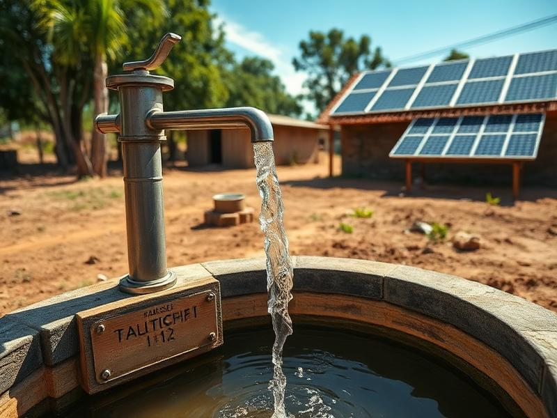
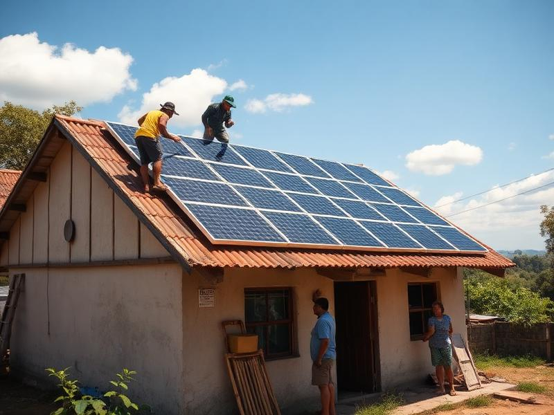
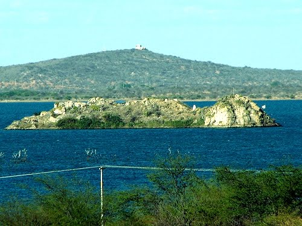
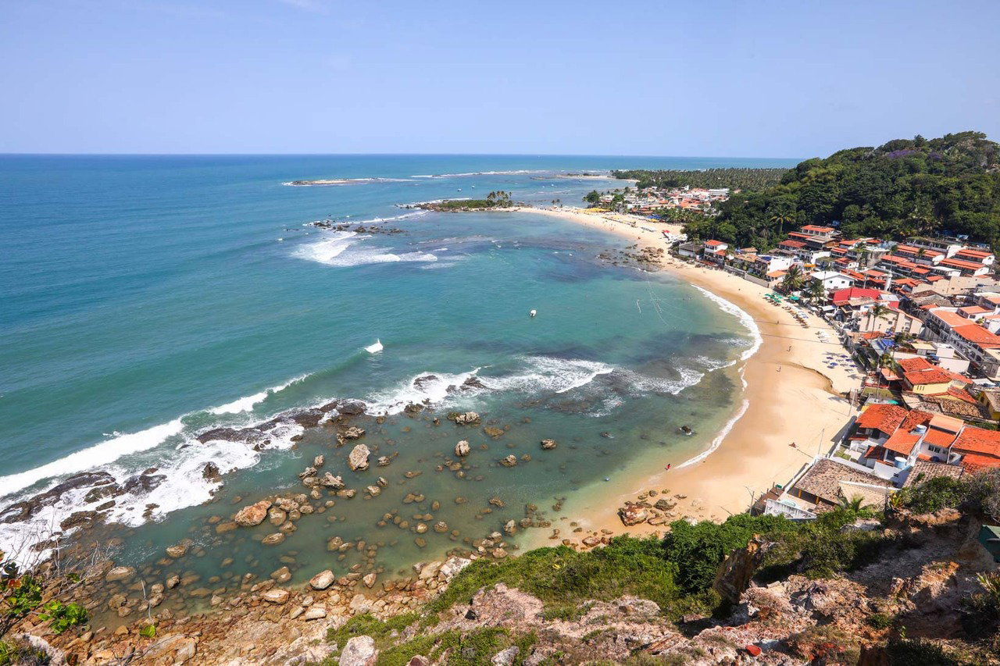
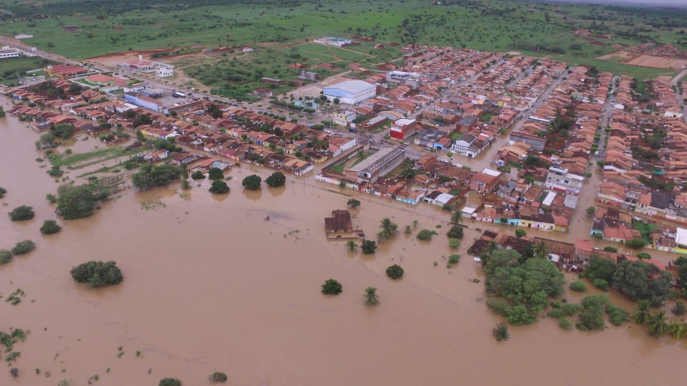
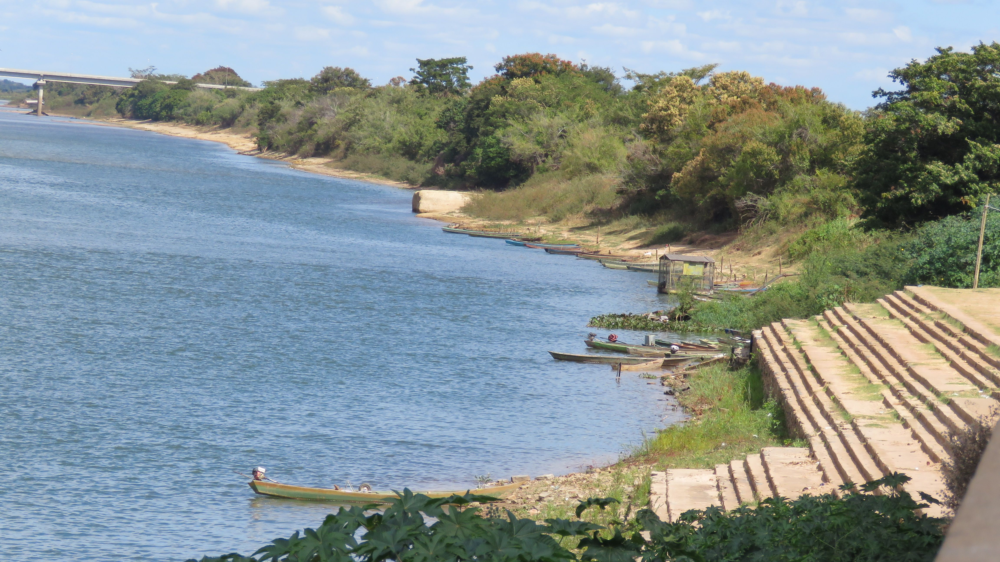
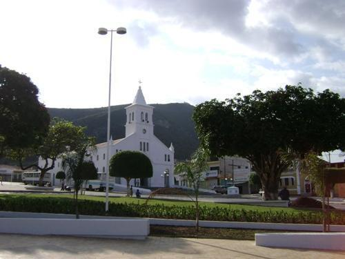
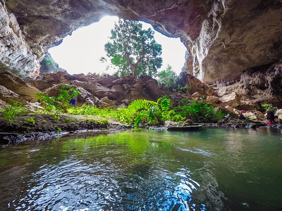
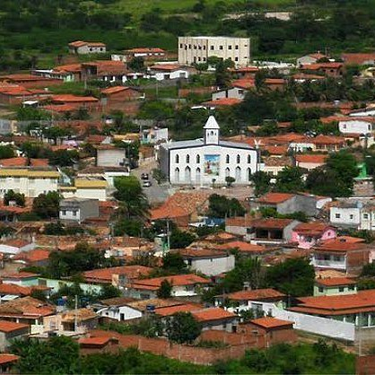

PROJETOS
Construímos poços e instalamos placas solares cedidas por parceiros para levar água potável a comunidades vulneráveis.

A Solis constrói poços artesianos em comunidades rurais da Bahia que não possuem acesso à água potável. Cada poço atende dezenas de famílias com água limpa, segura e gratuita.
Nossos parceiros disponibilizam painéis solares que são instalados junto aos poços artesianos, garantindo funcionamento contínuo sem custo de energia elétrica.


Alta necessidade de projetos de água potável e uso de energia solar para garantir abastecimento contínuo.
📍 Rodelas
Ideal para soluções sustentáveis descentralizadas, como energia solar e sistemas locais de tratamento de água.
📍 Cairu
Região estratégica para projetos que integrem água potável e energia limpa, reduzindo impactos da seca.
📍 Coronel João Sá
Localização com vulnerabilidade social e infraestrura limitada.

Forte potencial para integração entre energia solar e abastecimento de água.
📍 Monte Santo
Indicado para sistemas descentralizados de água e energia limpa.
📍 Campo Formoso
Ideal para uso de energia solar no bombeamento e tratamento de água..
📍 Jaguarari